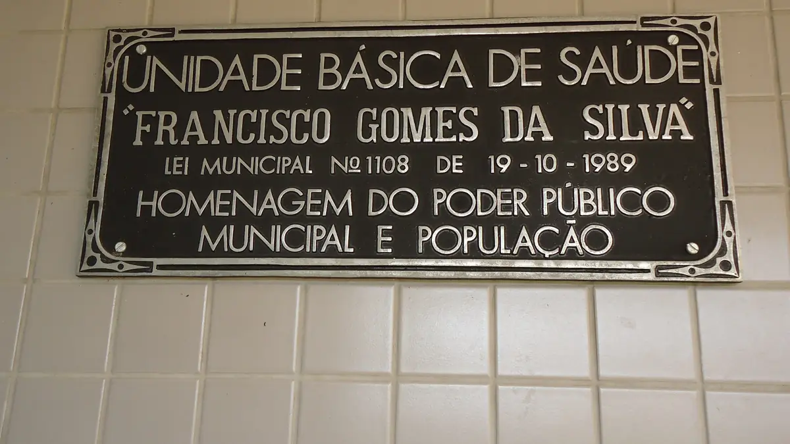

Saúde, moradia e educação
Saúde e escola pública são direitos de todas as pessoas, de qualquer nacionalidade e situação migratória.


Informação de orientação. Confirme nos órgãos oficiais, pois regras, valores e horários podem mudar.
Saúde: UBS e SUS
- O SUS é público e gratuito. Ele atende qualquer pessoa, de qualquer nacionalidade ou situação migratória.
- A UBS (Unidade Básica de Saúde) é o primeiro lugar para procurar: consultas, vacinas e encaminhamento para especialistas.
- Você pode se cadastrar na UBS mesmo antes de fazer o registro na Polícia Federal.
- Para achar a UBS do seu endereço, use o Busca Saúde, da Prefeitura.
- A AMA/UBS Pari tem profissionais bilíngues e placas em espanhol, inglês, francês, árabe e chinês.
Emergência: ligue 192 (SAMU) ou vá a um pronto-socorro.
Abrigo e moradia
Se você não tem onde dormir
- A Prefeitura tem centros de acolhida, alguns só para imigrantes.
- Para pedir vaga, ligue 156 ou procure o CREAS ou o CRAS da sua região.
- O CRAI, centro da Prefeitura para imigrantes, também orienta.
- As vagas dependem de disponibilidade.
Para alugar
- Peça contrato por escrito e recibo de cada pagamento.
- Não pague nada antes de ver o imóvel.
- Se tiver dúvida sobre o contrato, procure a Defensoria Pública.
Matrícula escolar
- Toda criança e adolescente tem direito a estudar na escola pública, mesmo sem documentos e qualquer que seja a situação migratória.
- A escola não pode recusar a matrícula por falta de documentos ou de tradução juramentada. Os documentos podem ser entregues depois.
- Sem histórico escolar, a escola faz uma avaliação para definir o ano certo para o estudante.
- Procure a escola mais perto da sua casa. Se tiver dificuldade, procure a Diretoria Regional de Educação ou o Conselho Tutelar.
Aulas de português
O Portas Abertas é o curso de português grátis da Prefeitura para imigrantes.
- Para pessoas a partir de 16 anos.
- Não precisa de documentos. A situação migratória não importa.
- Matrículas o ano todo, direto nas escolas municipais que participam do programa.
- Níveis básico, intermediário e avançado. Quem tem pelo menos 75% de presença recebe certificado.
Fontes oficiais
Consultado em 8 de outubro de 2026.
- Prefeitura de São Paulo: Atendimentos de saúde a imigrantes
- Prefeitura de São Paulo: AMA/UBS Pari atende pacientes de 87 nacionalidades
- Prefeitura de São Paulo: Busca Saúde
- Prefeitura de São Paulo: Informações sobre acolhimento
- Prefeitura de São Paulo: Centros de Acolhida
- Conselho Nacional de Educação: Resolução CNE/CEB nº 1/2020
- Secretaria Municipal de Educação: Matrícula sem exigência de documentos
- Prefeitura de São Paulo: Portas Abertas
- Secretaria Municipal de Educação: Inscrições no Portas Abertas